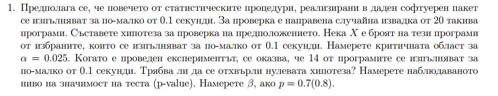

class: center, middle # Summary --- ## Cheatsheet --- # Тестване на хипотези ### 2 подхода ## * К.О. ## * p_value --- Сега 2 начина да проверим хипотезата: 1. С критична област ** К.О. ** 1. Формулираме хипотеза и алтернативна хипотеза 2. Предполагаме, че нулевата хипотеза е вярна, определяме разпределението на тестовата статистика 3. Намираме критичната област, като знаем какъв е видът ѝ и колко е $\alpha$ 4. Проверяваме дали тестовата статистика е в К.О. --- Тестовите статистики, с които ще работим, са: $z* = \frac{\overline{Xn} - \mu_0}{\sigma}\sqrt n$ , ако хипотезата е за $\mu_0$ $t* = \frac{\overline{Xn} - \mu_0}{s}\sqrt n$, ако хипотезата е за $\mu_0$ $z* = \frac{\overline{p} - p_0}{\sqrt{\frac{p_0(1-p_0)}{n}}} $, ако хипотезата е за $p_0$ $chiq* = \frac{(n-1)s^2}{\sigma^2_0}$, ако хипотезата е за $\sigma_0$ --- * Ако попада в К.О., отхвърляме хипотезата. * Ако не попада в К.О., не отхвърляме хипотезата. --- 2 . Да сметнем p value **p value** е вероятността да наблюдаваме нашите данни и такива данни, които още по-силно подкрепят алтернативната хипотеза, при условие, че H_0 е вярна. 1. Формулираме хипотеза и алтернативна хипотеза 2. Предполагаме, че нулевата хипотеза е вярна, определяме разпределението на тестовата статистика 3. Знаем какво е разпределението на тестовата статистика, с $X_observed$ смятаме P_value p_value = P($X_observed$ >= X) ако К.О. е надясно p_value = P($X_observed$ <= X) ако К.О. е наляво p_value = 2*P($X_observed$ >= X) ако К.О. е от двете страни Ако p_value < alpha, отхвърляме хипотезата!!! --- # Задача Имаме извадка от нормално разпределена популация: 7.4, 7.1, 6.5, 7.5, 7.6, 6.3, 7.7, 6.9, 6.5, 7.0 n = 10 а) намерете 98% д.и. за $\mu$ б) намерете 98% д.и. за $\sigma$ в) тествайте хипотезата: H_0: $\mu >= 7.5 $ H_a: $\mu < 7.5 $ при $\alpha=0.02$ --- ```r x = c(7.4, 7.1, 6.5, 7.5, 7.6, 6.3, 7.7, 6.9, 6.5, 7.0) sample_mean = mean(x) n = length(x) sample_sd = sd(x) sample_variance = var(x) alpha = 0.02 ``` --- ```r ## CI mean sample_mean - sample_sd/sqrt(n)*c(qt(1 - alpha/2, n - 1), qt(alpha/2, n - 1)) t.test(x) ``` --- ```r ## CI variance (n-1)*sample_variance/c(qchisq(1 - alpha/2, n - 1), qchisq(alpha/2, n - 1)) ``` --- ```r ## Hypothesis # Коя беше тестовата статистика? Ами работим с t разпределение -> mu_hypothesis = 7.5 t_star = (sample_mean - mu_hypothesis)/sample_sd*sqrt(n) ``` --- ```r #### С Критична област # Критична област за alpha # Едностранен тест е # следователно К.О. е от -безкрайност до: qt(alpha, n-1) # t_star е в К.О. -> следователно отхвърляме хипотезата. ``` --- ```r #### С p_value pt(t_star, n-1) # [1] 0.009556784 # По-малко ли е от alpha? Да -> отхвърляме ``` --- # Задача Поне 15% от хората обичат пица с ананас. Питани са 40 случайни души и се оказало, че 9 от тях обичат пица с ананас. Съставете хипотеза за твърдението “поне 15% от хората обичат пица с ананас” и я проверете. при $\alpha=0.1$ --- $H_0: p >= 0.15 $ $H_a: p < 0.15 $ при $\alpha=0.1$ --- ```r n = 40 x_observed = 9 p_hypothesis = 0.15 alpha = 0.05 # Какво е разпределението? Биномно с n = 40 и вероятност p = 0.15. plot(dbinom(seq(0, 40, 1), n, p_hypothesis), type="s") # тогава p_value = pbinom(x_observed, n, p_hypothesis) p_value < alpha # или К.О. x_cr = qbinom(alpha, n, p_hypothesis) ``` --- # Задача  --- Повечето -> p > 0.5 Тъй като няма равенство, отива в алтернативата. $H_0: p <= 0.5 $ $H_a: p > 0.5 $ --- ```r # Повечето -> p > 0.5 # Тъй като няма равенство, отива в алтернативата. p_hypothesis = 0.5 n = 20 alpha = 0.025 x_observed = 14 # Binom разпределение с p_hypothesis = 0.5 и n = 20 ``` --- ```r ### С p_value # К.О. е вдясно plot(dbinom(seq(0, n, 1), n, p_hypothesis), type="s") pbinom(x_observed, n, p_hypothesis, lower.tail = FALSE) # по-малко е от alpha -> отхвърляме хипотезата ``` --- ```r ### С критична област x_cr = qbinom(alpha, n, p_hypothesis, lower.tail = FALSE) # да, попада вътре -> отхвърляме ``` --- ```r ## beta беше да не отхвърлим H0, като H0 не е вярно. ## H0 не е вярно, вярно е p = 0.7 от условието # P(да не отхвърлим H0| Binom(n, p=0.7)) pbinom(x_cr, n, 0.7) ``` --- # Задача Интервюирани са 500 ученици и 278 са от Пенсилвания. При ниво на съгласие $\alpha = 0.05$, можем ли да заключим, че $p > 0.5$ ? --- $H_0: p <= 0.5 $ $H_a: p > 0.5 $ ```r p_hypothesis = 0.5 n = 500 x_observed = 278 alpha = 0.05 # Binom # К.О. x_cr = qbinom(alpha, n, p_hypothesis, lower.tail = FALSE) # [1] 268 # Наблюдаваното попада ли вътре? # Да -> и отхвърляме хипотезата # p_val p_val = pbinom(x_observed, n, p_hypothesis, lower.tail = FALSE) p_val < alpha ``` --- # Задача Средно височината на дървения материал е 8.5 feet. Дърводелец иска да провери дали дървесината, която е получил наистина е толкова. Той е получил 61 парчета, средното на които е 8.3 feet и имат стандартно отклонение 1.2feet. Проведете теста при ниво на съгласие 1%. --- Каква е хипотезата? Къде е критичната област? ```r n = 61 sample_mean = 8.3 sample_sd = 1.2 alpha = 0.01 ``` --- ```r # Знаем, че извадковото средно е нормално разпределено със mu = sample_mean sigma = sample_sd / sqrt(n) plot(dnorm(seq(5, 12, 0.01), mu, sigma), type="l") # К.О. там е x_cr_left = qnorm(alpha/2, mu, sigma) x_cr_right = qnorm(alpha/2, mu, sigma, lower.tail=FALSE) mu_hypothesis = 8.5 # Не попада в КО и не отхвърляме хипотезата p_value = 2 * pnorm(mu_hypothesis, mu, sigma) ``` --- Учен измервал твърдостта на желязото и получил следните 25 резултата: 170 167 174 179 179 156 163 156 187 156 183 179 174 179 170 156 187 179 183 174 187 167 159 170 179 а) Той предположил, че твърдостта е > 170. а) Той предположил, че твърдостта е < 170. а) Той предположил, че твърдостта е = 170. Съставете хипотези за всяка подточка. Тествайте ги. ---